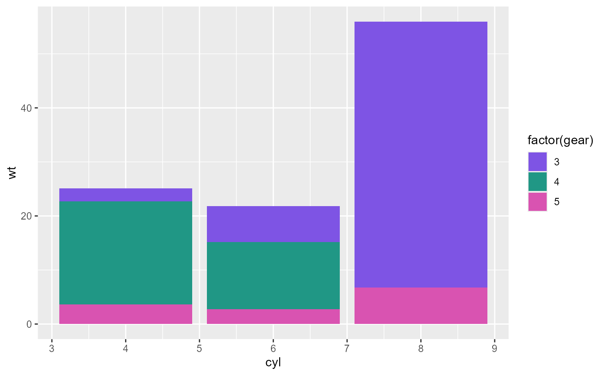
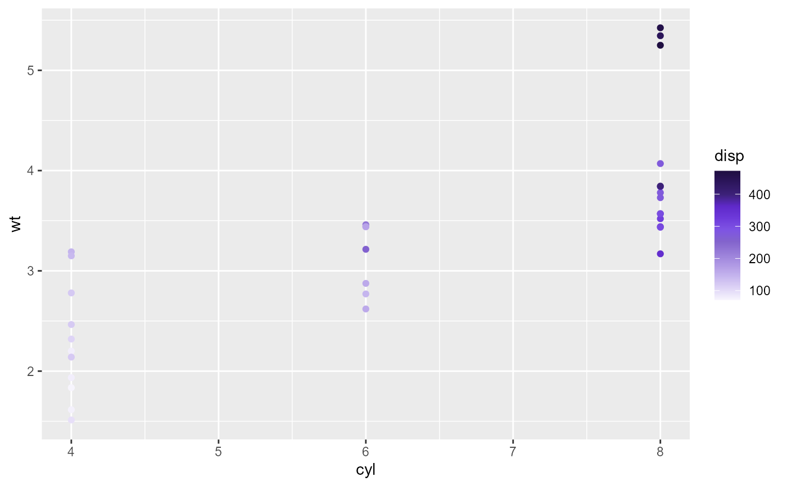
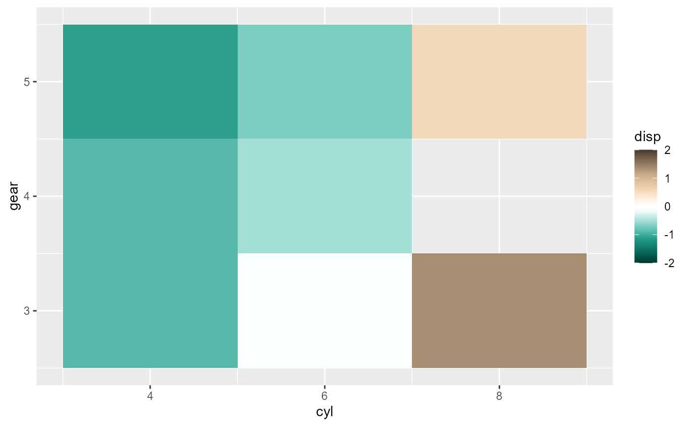

Pixelgen ggplot2 color themes
color-themes.RdThese functions return ggplot2 color scales that uses Pixelgen accent colors. Works both for discrete and sequential data and sets colors both for fill and color aesthetics.
Usage
color_discrete_pixelgen(
hue = NULL,
level = NULL,
aes_type = NULL,
shuffle = FALSE,
indices = NULL
)
color_sequential_pixelgen(hue = "purples", direction = 1, aes_type = NULL)
color_divergent_pixelgen(
hue_low = "blues",
hue_high = "reds",
limits = NULL,
aes_type = NULL
)Arguments
- hue
The hue to use for the colors. See
Pixelgen_accent_colorsfor available hues.- level
The level of the hue to use. See
Pixelgen_accent_colorsfor available levels.- aes_type
The aesthetics type to color. Either "fill" or "color" or NULL to color both (default).
- shuffle
Whether to shuffle the colors in the resulting palette. Default is FALSE.
- indices
A vector of indices to control the selection of colors.
- direction
The direction of the color gradient. 1 for normal, -1 for reversed.
- hue_low, hue_high
The low/high hue for the color gradient. For example,
hue_low = 'blues'andhue_high = 'reds'will create a gradient from blue to red with white in the middle.- limits
The limits of the color scale.
Examples
library(ggplot2)
library(dplyr)
# Discrete colors
ggplot(mtcars, aes(cyl, wt, fill = factor(gear))) +
geom_col() +
color_discrete_pixelgen()

# Sequential scale
ggplot(mtcars, aes(cyl, wt, color = disp)) +
geom_point() +
color_sequential_pixelgen()

# Divergent scale
ggplot(mtcars %>% mutate(disp = scale(disp)), aes(cyl, gear, fill = disp)) +
geom_tile() +
color_divergent_pixelgen(limits = c(-2, 2), hue_low = "cyans", hue_high = "beiges")
